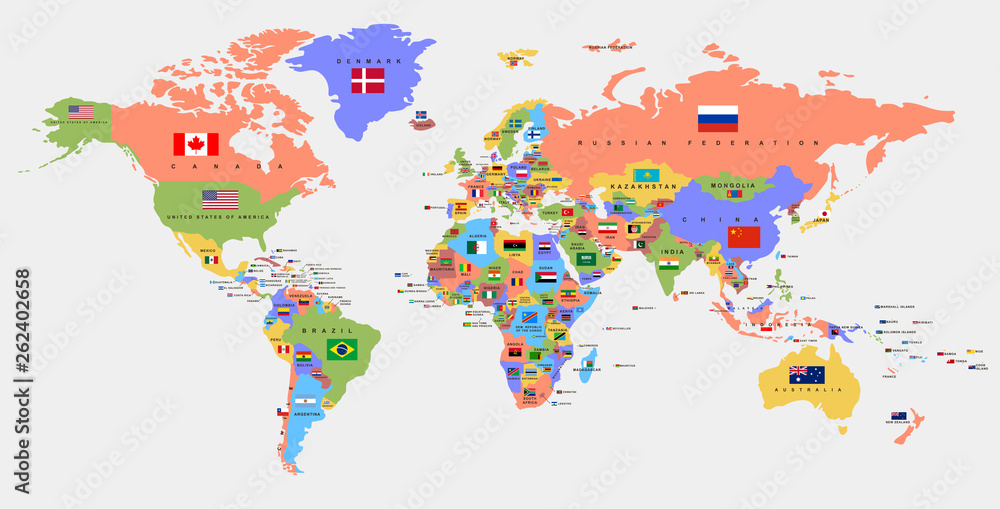

Peran Indonesia dalam kerja sama regional ASEAN sangat penting, baik di bidang politik, ekonomi, maupun sosial. Sebagai salah satu pendiri ASEAN, Indonesia berkomitmen untuk memperkuat integrasi kawasan melalui berbagai inisiatif. Indonesia memimpin dalam berbagai dialog untuk memperkuat kerja sama ekonomi, meningkatkan kapasitas negara anggota dalam menghadapi tantangan global, dan memperkuat stabilitas kawasan melalui diplomasi yang aktif. Indonesia juga berperan penting dalam berbagai isu strategis seperti perubahan iklim dan keamanan maritim, serta dalam mendorong perdamaian melalui program-program kemanusiaan dan pembangunan di kawasan Asia Tenggara. Indonesia turut aktif dalam memperkuat hubungan antarnegara melalui diplomasi internasional dan sering memainkan peran sebagai penghubung dan mediator dalam forum internasional, seperti di bidang ekonomi dan sosial.
Selain itu, Indonesia berperan penting dalam mendorong kerja sama di tingkat regional dan internasional, terutama melalui organisasi seperti ASEAN. Indonesia aktif dalam mempromosikan perdamaian dan stabilitas di kawasan dengan memberikan kontribusi dalam berbagai isu seperti perubahan iklim, keamanan maritim, serta memperkuat hubungan antar negara anggota ASEAN. Indonesia juga berkomitmen untuk meningkatkan kualitas hidup melalui pendidikan, kesehatan, dan pembangunan berkelanjutan, yang sejalan dengan Tujuan Pembangunan Berkelanjutan (SDGs), khususnya SDG 4, yang berfokus pada pendidikan berkualitas.
Dalam lingkup internasional, Indonesia memfasilitasi dialog antar negara anggota ASEAN dan berkontribusi dalam memperkuat kerja sama internasional yang saling menguntungkan. Indonesia mendukung diplomasi yang bebas dan aktif, dan memainkan peran kunci dalam kerja sama antara negara-negara berkembang. Negara ini juga berfokus pada berbagai proyek yang berfokus pada pembangunan berkelanjutan, terutama di sektor pendidikan, teknologi, dan ekonomi. Dengan berbagai kontribusi ini, Indonesia tidak hanya memperkuat kerja sama regional tetapi juga mendemonstrasikan komitmennya terhadap tujuan pembangunan global, sejalan dengan Tujuan Pembangunan Berkelanjutan (SDGs), terutama dalam meningkatkan akses pendidikan yang berkualitas dan merata.
